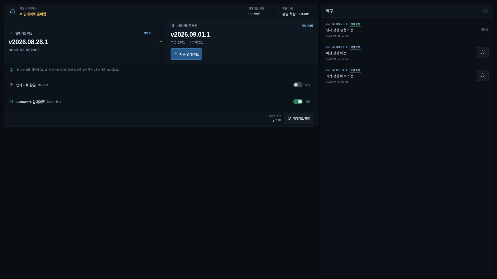
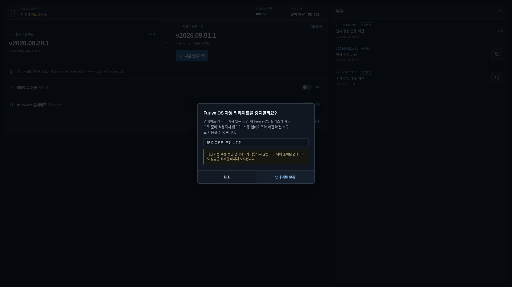
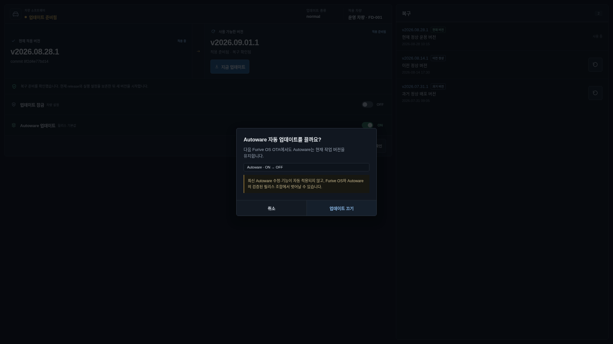
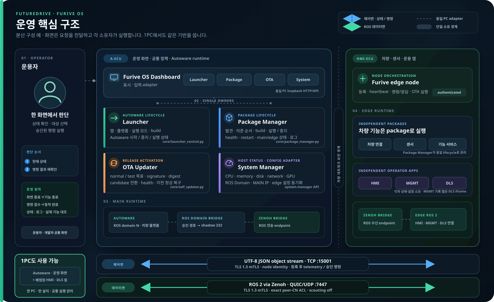

🔄 OTA Updater 사용 가이드¶
OTA Updater는 차량에 적용된 Furive OS release, 사용 가능한 새 release, 업데이트 정책과 이전 정상 버전을 한 화면에서 관리하는 release activation 화면입니다. Dashboard는 확인과 입력을 제공하고, 목표 선택·candidate 준비·검증·전환·복구는 OTA owner가 한 흐름으로 처리합니다.
오프라인 배포용 편집본은 OTA Updater PDF 사용 설명서입니다.
대상 차량 운용·정비 담당자
시작 위치 OTA Updater 화면 또는 CLI
완료 기준 현재 버전과 적용·복구 결과
1. 시작과 진입¶
설치 묶음의 ./bootstrap.sh가 역할·차량·플랫폼·업데이트 종류와 release를 저장합니다. 로그인 뒤 Furive OS에서
OTA Updater를 선택하면 현재 release와 원격 확인 결과가 표시됩니다. 일반 운용에서 내부 branch나 tag를 직접
입력하지 않습니다.
화면이 열리지 않거나 조회가 실패하면 먼저 공통 상태와 로그를 확인합니다.
서비스 재시작은 준비·적용·복구가 진행 중이지 않고 차량이 정비 상태일 때만 수행합니다.
⌨️ CLI로 같은 작업하기¶
| 확인·작업 | 명령 |
|---|---|
| 현재 버전·정책·진행 상태 | furive ota status |
| 새 업데이트 확인 | furive ota check |
| 복구할 버전 확인 | furive ota history |
꼭 확인
확인 → 준비 → 적용 → 상태 재확인 순서로 구분합니다. 적용·복구는 정비 상태에서 실행합니다. 잠금, 준비·적용, 이전 버전 복구와 재시작은 OTA 명령어 표를 봅니다.
2. 업데이트 종류와 안전 원칙¶
운용자가 쓰는 업데이트 종류는 두 가지입니다.
| 종류 | 용도 | 범위 |
|---|---|---|
normal |
검증을 마친 공용 운영판 | 승인된 플랫폼 차량 |
test |
한 차량의 임시 시험판 | 지정된 vehicle ID 한 대 |
주의
업데이트와 이전 버전 복구는 service 중단과 재시작을 포함합니다. 운행·녹화·전송·빌드 중에는 실행하지 않고, 차량이 안전하게 정지한 정비 창에서만 수행합니다.
- 현재와 target version, 업데이트 종류와 적용 차량을 함께 확인합니다.
지금 업데이트요청 뒤 브라우저를 닫거나 host 전원을 끄지 않습니다.- 준비 성공은 적용 완료가 아닙니다. 재시작, startup health와 최종 version을 확인합니다.
- 복구 버튼은 과거 release로 재시작하는 작업입니다. 단순 화면 되돌리기가 아닙니다.
- 업데이트 잠금을 문제 은폐 수단으로 사용하지 않습니다. 잠금 사유와 해제 조건을 운영 기록에 남깁니다.
3. 업데이트 화면 읽기¶

- 차량 소프트웨어 상태: 최신, 업데이트 있음, 준비됨, 잠금 또는 오류를 표시합니다.
- 업데이트 종류·적용 차량:
normal/test와 현재 vehicle을 대조합니다. - 현재 적용 버전: 현재 canonical tag와 commit을 표시합니다.
- 사용 가능한 버전: 원격에서 선택된 target과 준비 상태를 표시합니다.
지금 업데이트: target이 현재보다 새롭고 정책·복구 준비가 유효할 때 활성화됩니다.- 복구 계약: 현재 release와 실행 설정 보존, startup 실패 시 이전 정상판 복구 여부를 설명합니다.
- 업데이트 잠금: Furive OS 자동 준비·수동 적용·복구를 함께 제한합니다.
- Autoware 업데이트: 다음 Furive OS OTA에서 release 지정 Autoware revision을 적용할지 정합니다.
- 마지막 확인과
업데이트 확인: 원격 조회 시각과 수동 조회 버튼입니다. - 복구 목록: 현재, 이전 정상, 그보다 오래된 사용 가능 version을 구분합니다.
version은 CalVer tag로 보이지만 실제 내용 식별은 release manifest와 image digest lock이 담당합니다. 화면에 새 tag가 보인다는 사실만으로 적용 가능 판정을 내리지 않습니다.
4. 정상 업데이트 순서¶
- 차량을 안전 정차하고 주행·DLS 기록·재생·전송·Autoware 빌드를 끝냅니다.
- 현재 version과 업데이트 종류, 적용 차량을 기록합니다.
업데이트 확인을 누르고 마지막 확인 시각이 바뀌는지 확인합니다.- target이 현재보다 새로운 승인 version인지 확인합니다.
복구 확인됨또는 복구 준비 메시지를 확인합니다.지금 업데이트를 한 번 누릅니다.- 확인창의 current/target과 service 중단·재시작 경계를 읽고 승인합니다.
- 준비·검증·적용·재시작 상태가 순서대로 진행되는지 확인합니다.
- Dashboard가 다시 연결되면 current version이 target으로 바뀌었는지 확인합니다.
furive status와 실제 package 기능을 확인합니다.
업데이트 준비에는 시간이 걸릴 수 있습니다. candidate 준비 중 현재 version은 계속 실행될 수 있지만, 적용 단계에서는 package 중지와 재시작이 발생합니다. 진행이 느리다고 같은 요청을 반복하지 않습니다.
5. 업데이트 잠금¶

업데이트 잠금을 켜면 새 Furive OS release의 자동 준비·적용, 수동 업데이트와 이전 version 복구가 모두 중지됩니다. 이미 준비된 candidate도 잠금을 해제할 때까지 보류됩니다.
잠금을 사용할 수 있는 경우는 source 작업 보존, 승인 대기 또는 통제된 장애 조사처럼 해제 조건이 명확할 때입니다. 보안 수정과 정상 release 적용도 멈추므로 장기 기본값으로 두지 않습니다.
잠금 해제 전에는 다음을 확인합니다.
- 현재 source checkout의 필요한 작업을 commit 또는 별도 백업했다.
- 준비된 target, 업데이트 종류와 적용 차량이 맞다.
- 업데이트·재시작 가능한 정비 창이다.
- 잠금을 설정한 사유가 해소됐다.
6. Autoware 업데이트 정책¶

Autoware 업데이트가 ON이면 다음 Furive OS OTA가 release에 고정된 Autoware root와 하위 revision으로
workspace를 전환하고 필요한 빌드를 수행합니다. OFF이면 현재 작업 version을 유지합니다.
ON 전환 시 주의합니다.
- commit하지 않은 tracked 변경은 적용 중 Git stash로 이동해 현재 working tree에서 빠질 수 있습니다.
- untracked·ignored 파일은 같은 방식으로 자동 보호된다고 가정하지 않습니다.
- 필요한 source와 보정 파일을 commit 또는 승인된 위치에 백업합니다.
- OTA 뒤 Launcher의 current/target revision과 빌드·실행 결과를 확인합니다.
OFF는 개발 workspace 보존을 위한 local override이며 Furive OS와 Autoware의 검증된 release 조합에서 벗어날 수 있습니다. 운용 차량의 장기 기본값으로 만들지 않습니다.
7. 이전 정상 버전 복구¶
복구 목록은 현재 version, 이전 정상과 더 오래된 과거 버전을 구분합니다. 각 복구 아이콘은 해당 version을
선택하고 확인 절차를 시작합니다.
- 현재 장애와 version을 기록합니다.
- 업데이트 잠금이 꺼져 있는지 확인합니다.
이전 정상을 우선 선택합니다. 임의 과거 version은 호환 계약을 확인한 경우만 사용합니다.- 확인창에서 target version과 restart 경계를 대조합니다.
- package 중지·release 전환·재시작이 끝날 때까지 전원을 유지합니다.
- Dashboard 재연결 뒤 current tag와
복구 버전 유지 중상태를 확인합니다. furive status와 장애 기능을 다시 확인합니다.
복구는 데이터나 외부 시스템 상태를 자동으로 과거로 되돌리지 않습니다. DLS 기록, NAS 전송, 차량 보정과 외부 credential은 각각의 소유 경계에서 확인합니다.
8. 검증과 자동 복구가 동작하는 방식¶
OTA owner는 다음 흐름을 직렬화합니다.
목표 release 선택
→ candidate staging
→ signed tag · manifest · package lock · image digest 확인
→ 이전 정상 release와 실행 설정 보존
→ package 정지
→ candidate activation
→ startup · OTA control health 확인
→ 정상 확정 또는 이전 정상 release 복구
단순 process 생존만으로 정상 release를 확정하지 않습니다. activation 상태가 손상됐거나 후보 검증·package 종료· rollback이 실패하면 새 candidate를 계속 실행하지 않는 fail-closed 경계를 사용합니다.
정상 자동 업데이트는 target > current일 때만 허용하며, 명시적 release pin 또는 last-known-good 복구만 하향
전환 예외입니다. 같은 version 이름을 다른 내용에 다시 사용하지 않습니다.
9. 보안 경계¶
- production release는 고정한 signing root/KRL과 signed annotated tag가 HEAD와 일치해야 합니다.
- tracked index/worktree와 초기화된 submodule이 release 계약과 일치하는지 activation 직전 다시 확인합니다.
- manifest, package lock과 immutable image digest lock이 맞지 않으면 정상 release로 취급하지 않습니다.
- OTA status/control은 checkout과 runtime identity에 결속하고 candidate별 staging·lock·socket을 분리합니다.
- Dashboard의 package 화면은 격리 surface이고, control 입력은 method·path·package ID에 결속된 경계를 통과합니다.
- 실제 signing key, node certificate, control token과 credential을 화면·문서·로그에 남기지 않습니다.
서명과 digest 검증은 위·변조 경계이며 모든 차량 기능의 정상 동작을 대신 보증하지 않습니다. 한 차량 test의
실행·복구 결과와 같은 변경의 normal 승격을 별도로 수행합니다.
10. 문제 해결¶
| 증상 | 먼저 확인 | 다음 조치 | 하지 않을 것 |
|---|---|---|---|
| 최신 상태인데 기대 version이 없음 | 업데이트 종류·차량·마지막 확인 | 원격 release와 차량 할당 확인 | 임의 branch 입력 |
| 업데이트 확인 실패 | network·시간·Git host trust | service 로그의 fetch·검증 오류 | host key 검증 끄기 |
| 지금 업데이트 비활성 | 잠금·target 방향·복구 준비 | 화면 오류와 policy 해결 | DOM/API 우회 호출 |
| 준비 중 지속 | staging 상태·disk·image 준비 | updater 로그의 첫 실패 확인 | 같은 요청 반복 |
| 재시작 뒤 연결 안 됨 | stable launcher·activation health | 이전 정상 복구 상태 확인 | checkout 수동 교체 |
| 자동 복구 발생 | candidate startup 실패 원인 | current가 이전 정상인지 검증 | 실패 candidate 재적용 |
| 복구 버튼 비활성 | 업데이트 잠금과 busy 상태 | 진행 작업 종료·잠금 사유 해결 | 파일로 hold 제거 |
| Autoware revision 다름 | 정책 ON/OFF·Launcher target | source 보존 뒤 승인된 정렬 | local 변경 무조건 삭제 |
11. Furive OS 연계 구조¶

OTA Updater는 release activation을 소유하고, Package Manager는 전환 전후 package lifecycle을 수행합니다. Launcher는 release가 지정한 Autoware revision과 runtime을 소유합니다. System Manager는 자원과 ROS Domain을 보여 주지만 OTA target이나 복구 정책을 결정하지 않습니다.
MAIN과 edge의 exact target 전달과 응답은 UTF-8 JSON object stream over TCP :15001, TLS 1.3 mutual TLS를
사용합니다. ROS data plane의 Zenoh/QUIC UDP :7447 mTLS는 별도 경로이며 OTA version 확인만으로 ROS 연결을
보증하지 않습니다.
12. 운용 체크리스트¶
적용 전:
- 차량·운행·기록·전송·빌드가 모두 안전하게 종료됐다.
- current/target,
normal/test와 vehicle이 맞다. - 복구 준비와 이전 정상 version을 확인했다.
- source 작업과 필요한 설정을 보존했다.
적용 후:
- current version이 target과 일치한다.
- Package Manager의 필수 package가 안정적으로 실행된다.
- Launcher·HMI·MGMT·DLS와 차량 기능을 확인했다.
- 실패 시 이전 정상 version으로 복구되고 원래 기능이 돌아왔는지 확인했다.